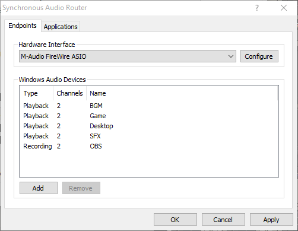
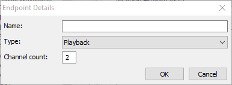
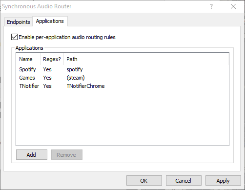

Overview
Installation
System Requirements: Windows 7 or later, x64 (64-bit) version, and an audio interface with ASIO support. ASIO4ALL is supported for devices without native ASIO support.
SAR is provided as a standard Windows Installer package. If you're using Windows 7, Windows Update KB3033929 is a prerequisite. If it's missing, driver installation/loading will fail with an unsigned driver error.
If SAR is currrently in use, you may need to close applications or reboot your machine after installing. Follow the on-screen instructions as needed.
Once installed, the DAW application should be run as admin, and SAR will be available in the list of ASIO drivers. Select it and open its control panel to open the endpoint list.
Endpoint List
The endpoint list contains the most important required configuration options for SAR.
- Hardware Interface - Select an ASIO driver for the physical audio interface to be used. SAR will not function without a selected ASIO driver. Click Configure to open the control panel for the physical audio interface's driver.
- Windows Audio Devices - used to define audio endpoints. Any number of endpoints may be created, limited only by the performance of the machine. Endpoints are dynamically created when the host application starts ASIO, so they won't be visible in Windows control panel or applications until the configuration dialog is closed. Two types of endpoint are supported: Playback endpoints appear as Windows sound outputs and are mapped to ASIO input channels. Use them to capture audio from applications. Recording endpoints appear as Windows sound inputs and are mapped to ASIO output channels. Use them to send audio to applications.
Selecting Add opens the endpoint details dialog.
Enter the name, type and number of channels for the endpoint and it will be added to the end of the endpoint list. Each endpoint will be mapped to ASIO channels in the order it occurs in the endpoint list, so for example, if the physical audio interface provides 2 input and 2 output channels, the configuration above would present BGM on ASIO inputs 3 and 4, Game on inputs 5 and 6, etc, and OBS on ASIO outputs 3 and 4, while leaving the original channels of the physical interface unmodified.
Application List
The application list is used to configure per-application overrides of the default Windows audio endpoints. This is useful to isolate audio from applications which don't have a UI for selecting an audio device.
- Enable per-application audio routing rules must be enabled to use this feature. If it's not enabled, applications will see the normal Windows defaults.
- Applications displays the defined routing rules. Each entry specifies which default endpoints should be used for one or more applications.
Selecting Add or double clicking a list entry opens the application details dialog.

- Path is either a filesystem path or regular expression, depending on whether the "Use regular expressions" option is selected. If using regular expressions, SAR performs a substring match using ECMAScript regex syntax to determine whether a path matches the rule.
- Running Applications displays a list of running applications. Selecting one will set the path to the location of the application's executable.
- Six different default endpoint settings are provided. Most applications use the "System" role, except for VoIP applications which may use Communications.
- Once a rule is defined, the applications matching the rule may need to be restarted. Make sure to apply your changes on the SAR configuration dialog before restarting your apps.
Known Issues / Limitations
SAR is subject to the maximum latency limitation of WaveRT, which attempts to maintain a 10ms processing interval. As such, SAR limits the buffer size that's available to the ASIO host to a maximum of 1/100th of the sample rate. This imposes a latency requirement for the system that not all machines may be able to meet. If you experience buffer underruns at the maximum supported latency, try running a latency testing program such as LatencyMon to determine the cause of the delays.
The current version of SAR requires that the host application which is creating endpoints have admin privileges. This is due to some security concerns with allowing applications to dynamically create audio endpoints, as well as the shared memory approach used to implement the WaveRT "hardware registers". The limitation may be removed in the future.